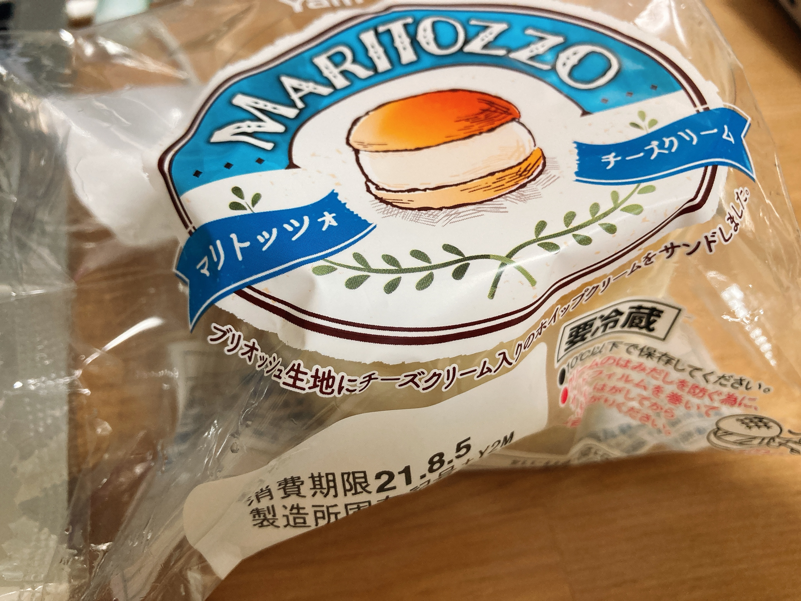
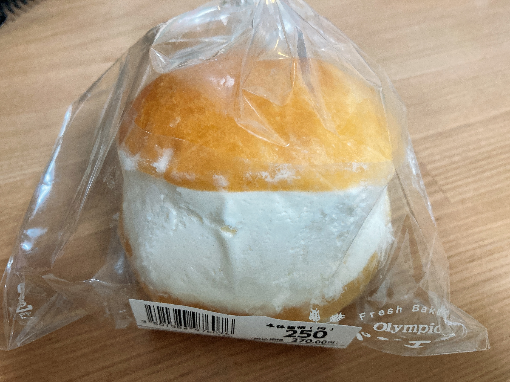
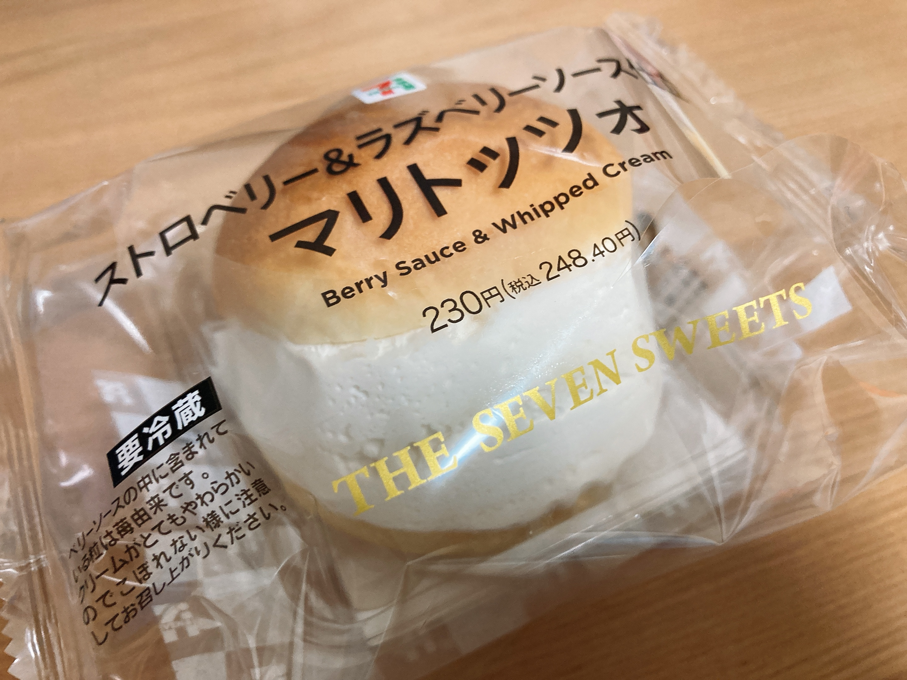
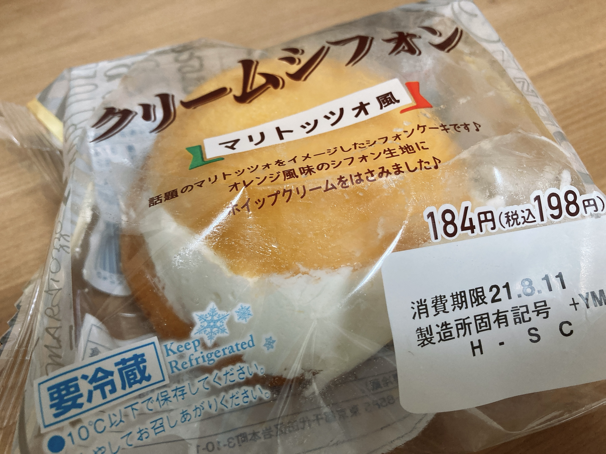
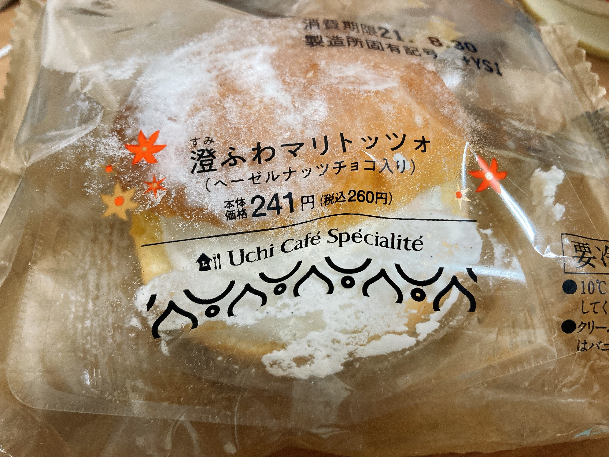

クリームギチギチパン
流行りには乗れ。というスタンスで生きているわけではないのですが、食べ物、特に甘いものに関しては例外処置を取っています。なんだかんだ数年前はちゃんとタピオカちゅるちゅるする女子高生なるものをやっていたくらいには。
結構な頻度で生クリームをどかっと食いたくなることがあります。そんな願いをさっと叶えてくれる流行りものが。
マリトッツォ？贅沢な名だね
今日からお前はクリームギチギチパンだよ
わかったら返事をしな— 🌥️きゃぽり₍₍ଳ₎₎(@capopopopo_n)Thu Jul 08 12:15:42 +0000 2021
クリームギチギチパンこと、マリトッツォです。夏休みに入ってからちまちま近所のマリトッツォを巡回していたので、軽くレビューでも書こうかなと。
東急など

東急など、いろんなスーパーに置いてある一番オーソドックスなクリームギチギチパン。一番よくあるオレンジピール系統の味と、このチーズクリーム版の2種類があります。後者はクリームギチギチパンのクリームが全部チーズに化けるので、そこら辺のテキトーなチーズケーキよりむしろチーズチーズしててすごい。チーズ派はぜひ。
オリンピック

近所のオリンピックにはしっかりめのパン屋が併設されておりまして。由緒正しいしっかりブリオッシュで作られた、パンきっちりクリーム控えめパンって感じです。中に酸味のあるクリームが入ってて二層構造の美味しい仕様になってるんですが、この二層目が何味なのか実はまだちゃんとわかってなくて未だに首を捻っている。
セブンイレブン

こちらはうってかわって、パンではなくクリームに全振りしたクリームガチギチギチパン。マリトッツォにしては珍しくベリー系の味がプラスされてて、ベリー好きな🍳はとってもにこにこしています。ちと高いですが。と言っていたら知らない間にオレンジ系にナーフされていて泣いてしまいました。コンビニスイーツ、あるうちに食いまくっとかないと二度と手に入らなくてつらいんですよね。
ファミマ

これはマリトッツォのふりをしたクリームギチギチシフォンケーキ。騙されてはいけない。最初にこれを食べてしまうと他のマリトッツォでびっくりしてしまうので気をつけようね。スイーツが優秀なファミマなだけあって、とても満足度の高いふわもち物体となっています。しかも安めですごい。
ローソン

近所にナチュラルローソンしかないので、通常ローソンでも同じものが置いてあるかわかりませんが。これもきっちりブリオッシュを使ったクリーム控えめパン。珍しくチョコががっつり中に入っており、クリームギチギチパンをたくさん巡回してきた🍳も驚きを隠せませんでした。パンにこれでもかとふりかけてある粉糖がお上品。吹き飛ばさないように気をつけようね。
ひとくちにクリームギチギチパンと言っても、いろいろバリエーションがあって面白いですね。年を取ってしまうと胃が受け付けなくなる物体の筆頭でしょうから、老ける前にたくさん食べておきましょう。